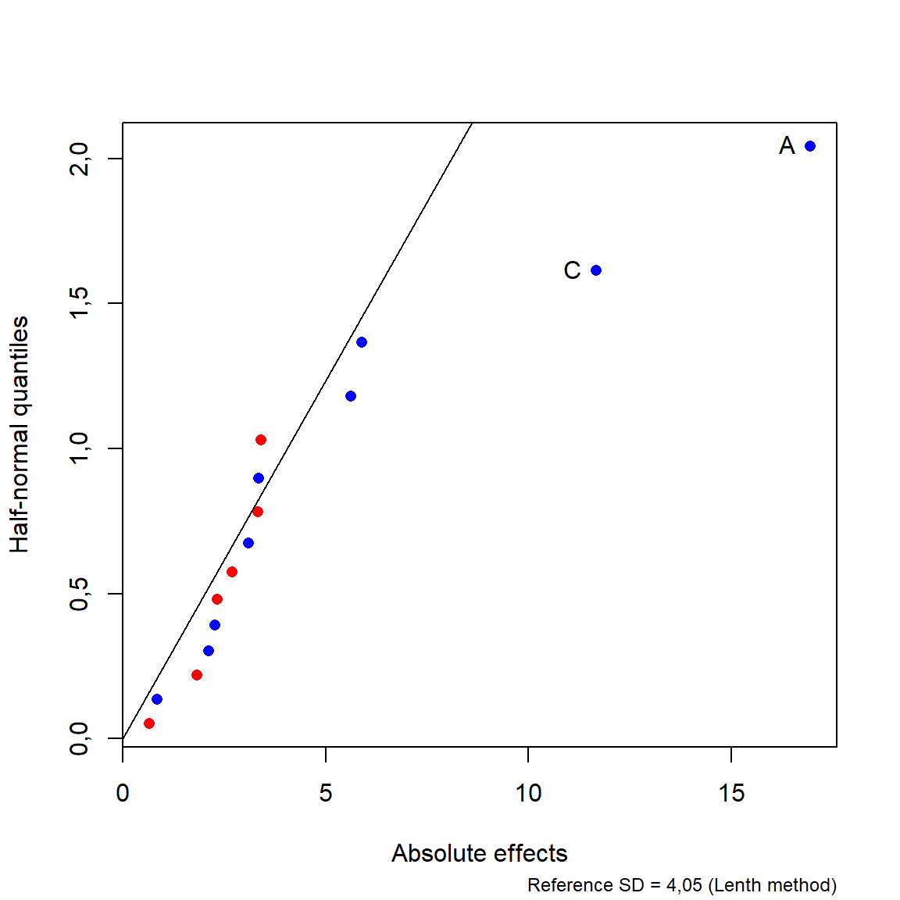

| ordem | Tempo [h] | Vazão [mL/min] | Corrente [A] | DQO [mg/L] | Remoção de DQO [%] |
|---|---|---|---|---|---|
| 1 | 1 | 400 | 0,5 | 362 | 43,4 |
| 2 | 2 | 400 | 0,5 | 362 | 54,1 |
| 3 | 1 | 600 | 0,5 | 362 | 48,6 |
| 4 | 2 | 600 | 0,5 | 362 | 65,5 |
| 5 | 1 | 400 | 1,0 | 362 | 59,7 |
| 6 | 2 | 400 | 1,0 | 362 | 61,9 |
| 7 | 1 | 600 | 1,0 | 362 | 56,9 |
| 8 | 2 | 600 | 1,0 | 362 | 71,3 |
| 9 | 1 | 400 | 0,5 | 723 | 47,4 |
| 10 | 2 | 400 | 0,5 | 723 | 69,2 |
| 11 | 1 | 600 | 0,5 | 723 | 38,5 |
| 12 | 2 | 600 | 0,5 | 723 | 70,5 |
| 13 | 1 | 400 | 1,0 | 723 | 55,9 |
| 14 | 2 | 400 | 1,0 | 723 | 79,9 |
| 15 | 1 | 600 | 1,0 | 723 | 65,7 |
| 16 | 2 | 600 | 1,0 | 723 | 79,3 |
6 Fatorial de dois níveis não replicado, com blocos e fracionado
6.1 Introdução
O fatorial \(2^k\) é um planejamento essencial ao DOE por permitir diversas estratégias na experimentação, desde a economia experimental, a partir de planejamentos não replicados ou fracionados, blocagem de variáveis controláveis porém indesejáveis, além da busca de região de curvatura e complementação do planejamento para obtenção de modelos passíveis de otimização.
Neste capítulo, será apresentado o planejamento fatorial \(2^k\) não replicado. Em seguida serão explicados os conceitos de blocagem. confundimento no fatorial \(2^k\). O planejamento fatorial fracionado \(2^{k-p}\) é exposto a partir dos conceitos de confundimento anteriormente apresentados.
Neste capítulo são utilizados os pacotes FrF2 e unrepx, além das funções básicas do R. Recomenda-se a instalação destes utilizando o comando install.packages("<nome_pacote>"). A instalação é realizada uma única vez, porém o pacote deve ser carregado via library(<nome_pacote>) sempre que deseja-se usar suas funções.
6.2 Fatorial \(2^k\) sem replicar
O fatorial \(2^k\) não replicado consiste em um caso particular do fatorial \(2^k\) com \(n = 1\). Especialmente quando há muitos fatores \(k\) de interesse a serem analisados, o fatorial \(2^k\) não replicado tem sido utilizado, visto que o custo da replicação é alto. É possível obter o modelo de regressão completo, porém não é possível testar os efeitos via teste \(t\) ou ANOVA, uma vez que não há graus de liberdade remanescentes para estimar o erro experimental, uma vez que o número total de experimentos é igual ao número de termos no modelo completo, \(N = 2^k = r\).
Existem métodos alternativos para estimar o erro experimental considerando os efeitos mais esparços, isto é, os efeitos de menor magnitude. Estes métodos se baseiam no princípio da esparcidade dos efeitos que garantem que poucos efeitos apresentam magnitude não desprezível, enquanto a maior parte dos efeitos investigados é esparça. Outra possibilidade de estimativa do erro experimental pode ser realizada a partir da redução hierárquica do modelo e, deste modo, testar a significância dos efeitos de menor ordem. Geralmente, os efeitos de menor ordem explicam melhor a variabilidade dos dados. Modelos saturados e com termos de ordem maior além de difícil interpretação, geralmente apresentam maior variabilidade.
Exemplo 6.1 Um fatorial \(2^4\) não replicado foi usado para estudar o tratamento eletroquímico de águas residuais de fabricação de fibra acrílica com eletrodo de diamante dopado com boro. Os fatores considerados foram o tempo de tratamento (1-2 horas), a vazão (400-600 mL/min), intensidade de corrente (0,50-1,00 A) e carga inicial de demanda química de oxigênio (362- 723 mg/L) na eficiência do tratamento.
Pode-se criar o planejamento utilizando o pacote FrF2 do R.
# Criando o planejamento
plan_eflu <- FrF2(nruns = 16,
nfactors = 4,
factor.names=list(Tem=c(1,2),
Vaz=c(400,600),
Cor=c(0.5,1),
DQO=c(362,723)),
replications = 1,
randomize = F)# Energia em [kJ]
y <- c(43.4, 54.1, 48.6, 65.5, 59.7, 61.9, 56.9, 71.3, 47.4, 69.2, 38.5, 70.5, 55.9, 79.9, 65.7, 79.3)
plan_eflu <- add.response(plan_eflu, y)
summary(plan_eflu)Call:
FrF2(nruns = 16, nfactors = 4, factor.names = list(Tem = c(1,
2), Vaz = c(400, 600), Cor = c(0.5, 1), DQO = c(362, 723)),
replications = 1, randomize = F)
Experimental design of type full factorial
16 runs
Factor settings:
Tem Vaz Cor DQO
1 1 400 0,5 362
2 2 600 1 723
Responses:
[1] y
The design itself:
Tem Vaz Cor DQO y
1 1 400 0,5 362 43,4
2 2 400 0,5 362 54,1
3 1 600 0,5 362 48,6
4 2 600 0,5 362 65,5
5 1 400 1 362 59,7
6 2 400 1 362 61,9
7 1 600 1 362 56,9
8 2 600 1 362 71,3
9 1 400 0,5 723 47,4
10 2 400 0,5 723 69,2
11 1 600 0,5 723 38,5
12 2 600 0,5 723 70,5
13 1 400 1 723 55,9
14 2 400 1 723 79,9
15 1 600 1 723 65,7
16 2 600 1 723 79,3
class=design, type= full factorial É possível calcular os efeitos no R conforme segue.
# construindo a matrix X
levels <- c(-1, +1)
plan2<- expand.grid(levels,levels,levels,levels)
colnames(plan2) <- c("x1","x2","x3","x4")
X <- with(plan2, cbind(I = 1, x1, x2, x3, x4, x1x2 = x1*x2, x1x3 = x1*x3,
x1x4 = x1*x4, x2x3 = x2*x3, x2x4 = x2*x4,
x3x4 = x3*x4, x1x2x3 = x1*x2*x3, x1x2x4 = x1*x2*x4,
x1x3x4 = x1*x3*x4, x2x3x4 = x2*x3*x4,
x1x2x3x4 = x1*x2*x3*x4))
# Calculando os efeitos
efeitos <- crossprod(X, y)/(1*2^4/2)
colnames(efeitos) <- "Efeitos"
efeitos Efeitos
I 120,975
x1 16,950
x2 3,100
x3 11,675
x4 5,625
x1x2 2,275
x1x3 -3,400
x1x4 5,900
x2x3 0,850
x2x4 -2,700
x3x4 2,125
x1x2x3 -1,825
x1x2x4 -2,325
x1x3x4 -0,650
x2x3x4 3,350
x1x2x3x4 -3,325Posteriormente pode-se obter os coeficientes de regressão conforme segue.
# Cálculo dos coeficientes
Coef <- efeitos/2
colnames(Coef) <- "Coeficientes"
Coef Coeficientes
I 60,4875
x1 8,4750
x2 1,5500
x3 5,8375
x4 2,8125
x1x2 1,1375
x1x3 -1,7000
x1x4 2,9500
x2x3 0,4250
x2x4 -1,3500
x3x4 1,0625
x1x2x3 -0,9125
x1x2x4 -1,1625
x1x3x4 -0,3250
x2x3x4 1,6750
x1x2x3x4 -1,6625Uma vez que \(N = 2^4 = 16\) e \(r = 16\), não há graus de liberdade para estimar o erro experimental, pois \(DF_E= N - r = 0\). Deste modo, os métodos tradicionais para testar a significância dos efeitos, isto é, o teste \(t\) e a ANOVA não podem ser realizados.
Pode-se testar a significância dos efeitos utilizando o pseudo erro padrão de Lenth. Sejam \(E_1\), \(E_2\)…, \(E_{N-1}\) os efeitos estimados em um fatorial \(2^k\) não replicado. Seja \(s_0\), onde \(\widetilde{|E_j|}\) é a mediana dos efeitos padonizados.
\[ s_0 = 1,5\widetilde{|E_j|} \]
Então, o pseudo erro padrão de Lenth (pseudo standard error- PSE) é calculado de forma análoga, porém considerando apenas os efeitos esparsos. Estes efeitos desprezíveis são levados em consideração no cálculo, conforme Equação 6.1, visto que podem representar o erro aleatório do processo em estudo.
\[ PSE = 1,5\underbrace{\widetilde{|E_j|}}_{|E_j|<2,5s_0} \tag{6.1}\]
Define-se um intervalo de 0,95 de confiança para o erro, com o limite denominado de erro marginal, \(ME\), conforme Equação 6.2. Pode-se também construir um intervalo de confiança para o i-ésimo efeito como \(E_j \pm ME\).
\[ ME= t_{(0,975;m/3)}PSE \tag{6.2}\]
Quando o número de efeitos \(N-1\) testados é alto, pode acontecer de efeitos inativos serem significativos. Deste modo, pode-se usar como alternativa a margem de erro simultânea, \(SME\), conforme Equação 6.3, onde \(\gamma = (1+0,95^{1/m})/2\).
\[ SME= t_{(\gamma;m/3)}PSE \tag{6.3}\]
O pacote unrepx do R, de autoria do próprio Lenth, pode ser utilizado para análise da significância dos efeitos considerando o pseudo erro padrão.
# carregando o pacote unrepx
library(unrepx)Primeiramente, deve-se tomar os efeitos, \(E_1\), …, \(E_{N-1}\). O comando yates do pacote unrepx permite a estimativa dos efeitos sem a necessidade da matriz \(\textbf{X}\), conforme segue.
# Efeitos
efeitos <- yates(y)
efeitos A B AB C AC BC ABC D AD BD ABD
16,950 3,100 2,275 11,675 -3,400 0,850 -1,825 5,625 5,900 -2,700 -2,325
CD ACD BCD ABCD
2,125 -0,650 3,350 -3,325
attr(,"mean")
60,4875 O chamado half normal plot ou gráfico de Daniel, permite observar os efeitos mais importantes. Neste gráfico, os efeitos são plotados de forma padronizada e ordenada em relação aos quantis da distribuição normal. Quanto maior o desvio da reta onde devem se encontrar os efeitos esparços, mais importante o efeito. Entretanto, ele funciona melhor quando há poucos efeitos influentes entre os \(N-1\) estimados. Os efeitos positivos são plotados em vermelho e os negativos em azul. Para o Exemplo 6.2 o half normal plot é apresentado na Figura 6.1. Pode-se concluir que os efeitos A e C são significativos considerando o erro marginal de Lenth.
hnplot(efeitos, half = T, method = "Lenth", ID = ME(efeitos))

O gráfico de Pareto tem sido comumente utilizado para plotar os efeitos em relação ao erro marginal, \(ME\), e ao erro marginal simultâneo, \(SME\). Para o Exemplo 6.2 o gráfico de Pareto é plotado na Figura 6.2. Pelo primeiro critério temos a mesma conclusão obtida pelo método gráfico de Daniel, enquanto pelo segundo critério apenas o efeito do fator A é significativo.
# Pareto PSE plot
parplot(efeitos, method = "Lenth")Finalmente, é possível resumir a análise da significância dos efeitos, conforme segue. O valor da estatística calculada \(t\) é obtido tomando a razão entre o efeito e o pseudo erro padrão de Lenth, isto é, \(t_j = E_j/PSE\). As conclusões são as mesmas das obtidas graficamente considerando o p-valor para \(ME\) e para o \(SME\).
# Análise da significância dos efeitos
eff.test(efeitos, method = "Lenth") effect Lenth_PSE t.ratio p.value simult.pval
A 16,950 4,05 4,185 0,0054 0,0502
C 11,675 4,05 2,883 0,0193 0,1815
AD 5,900 4,05 1,457 0,1425 0,8350
D 5,625 4,05 1,389 0,1598 0,8759
AC -3,400 4,05 -0,840 0,3697 1,0000
BCD 3,350 4,05 0,827 0,3772 1,0000
ABCD -3,325 4,05 -0,821 0,3809 1,0000
B 3,100 4,05 0,765 0,4132 1,0000
BD -2,700 4,05 -0,667 0,5388 1,0000
ABD -2,325 4,05 -0,574 0,5976 1,0000
AB 2,275 4,05 0,562 0,6057 1,0000
CD 2,125 4,05 0,525 0,6301 1,0000
ABC -1,825 4,05 -0,451 0,6793 1,0000
BC 0,850 4,05 0,210 0,8480 1,0000
ACD -0,650 4,05 -0,160 0,8829 1,0000Outra possibilidade em relação ao fatorial \(2^k\) não replicado é a estimativa do erro experimental utilizando graus de liberdade dos efeitos esparços desconsiderados. Para proceder desta forma podemos retomar o uso do pacote FrF2. Fazando a análise com o comando lm deste pacote apenas os efeitos de até segunda ordem são estimados. Consequentemente, a soma dos quadrados e os graus de liberdade dos erros são obtidos considerando os efeitos de terceira ordem ou maior. O resultado abaixo expõe o modelo de regressão e o teste t para os coeficientes. Os efeitos significativos foram os do Tempo e da Corrente, os mesmos significativos via \(ME\) de Lenth. Caso o experimentador queira continuar a investigação para procurar região de curvatura e um modelo quadrático, pode-se o modelo com interações de até segunda ordem é uma boa opção, além de ser de fácil interpretação.
# Análise via FrF2
lm_eflu <- lm(plan_eflu)
summary(lm_eflu)Number of observations used: 16
Formula:
y ~ (Tem + Vaz + Cor + DQO)^2
Call:
lm.default(formula = fo, data = model.frame(fo, data = formula))
Residuals:
1 2 3 4 5 6 7 8 9 10
-0,9375 -2,4125 1,5875 1,7625 3,2625 0,0875 -3,9125 0,5625 2,7625 0,5875
11 12 13 14 15 16
-3,4125 0,0625 -5,0875 1,7375 5,7375 -2,3875
Coefficients:
Estimate Std. Error t value Pr(>|t|)
(Intercept) 60,487 1,254 48,246 7,23e-08 ***
Tem1 8,475 1,254 6,760 0,00108 **
Vaz1 1,550 1,254 1,236 0,27125
Cor1 5,838 1,254 4,656 0,00555 **
DQO1 2,812 1,254 2,243 0,07490 .
Tem1:Vaz1 1,137 1,254 0,907 0,40586
Tem1:Cor1 -1,700 1,254 -1,356 0,23314
Tem1:DQO1 2,950 1,254 2,353 0,06532 .
Vaz1:Cor1 0,425 1,254 0,339 0,74839
Vaz1:DQO1 -1,350 1,254 -1,077 0,33076
Cor1:DQO1 1,062 1,254 0,847 0,43541
---
Signif. codes: 0 '***' 0,001 '**' 0,01 '*' 0,05 '.' 0,1 ' ' 1
Residual standard error: 5,015 on 5 degrees of freedom
Multiple R-squared: 0,9439, Adjusted R-squared: 0,8317
F-statistic: 8,413 on 10 and 5 DF, p-value: 0,01486Outra possibilidade é utilizar o comando lm para obter um modelo completo e reduzir o modelo. Pode-se também selecionar o modelo considerando a simplicidade na interpretação. Pelas análises realizadas o modelo reduzido com o comando step via opção backward presentou o maior ajuste, com menor AIC e maior coeficiente de determinação múltipla ajustado, \(R_{aj}^2 = 0,8464\). É importante recortdar que antes de aplicar o comando step, devse-se remover um coeficiente manualmente, sempre o de maior ordem.
# Modelo completo
lm_eflu2 <- lm(formula = y ~ (Tem + Vaz + Cor + DQO)^4, data = plan_eflu)
summary(lm_eflu2)
Call:
lm.default(formula = y ~ (Tem + Vaz + Cor + DQO)^4, data = plan_eflu)
Residuals:
ALL 16 residuals are 0: no residual degrees of freedom!
Coefficients:
Estimate Std. Error t value Pr(>|t|)
(Intercept) 60,4875 NaN NaN NaN
Tem1 8,4750 NaN NaN NaN
Vaz1 1,5500 NaN NaN NaN
Cor1 5,8375 NaN NaN NaN
DQO1 2,8125 NaN NaN NaN
Tem1:Vaz1 1,1375 NaN NaN NaN
Tem1:Cor1 -1,7000 NaN NaN NaN
Tem1:DQO1 2,9500 NaN NaN NaN
Vaz1:Cor1 0,4250 NaN NaN NaN
Vaz1:DQO1 -1,3500 NaN NaN NaN
Cor1:DQO1 1,0625 NaN NaN NaN
Tem1:Vaz1:Cor1 -0,9125 NaN NaN NaN
Tem1:Vaz1:DQO1 -1,1625 NaN NaN NaN
Tem1:Cor1:DQO1 -0,3250 NaN NaN NaN
Vaz1:Cor1:DQO1 1,6750 NaN NaN NaN
Tem1:Vaz1:Cor1:DQO1 -1,6625 NaN NaN NaN
Residual standard error: NaN on 0 degrees of freedom
Multiple R-squared: 1, Adjusted R-squared: NaN
F-statistic: NaN on 15 and 0 DF, p-value: NA# Modelo de terceira ordem
lm_eflu3 <- lm(formula = y ~ (Tem + Vaz + Cor + DQO)^3, data = plan_eflu)
summary(lm_eflu3)
Call:
lm.default(formula = y ~ (Tem + Vaz + Cor + DQO)^3, data = plan_eflu)
Residuals:
1 2 3 4 5 6 7 8 9 10 11
-1,663 1,663 1,663 -1,663 1,663 -1,663 -1,663 1,663 1,663 -1,663 -1,663
12 13 14 15 16
1,663 -1,663 1,663 1,663 -1,663
Coefficients:
Estimate Std. Error t value Pr(>|t|)
(Intercept) 60,4875 1,6625 36,383 0,0175 *
Tem1 8,4750 1,6625 5,098 0,1233
Vaz1 1,5500 1,6625 0,932 0,5223
Cor1 5,8375 1,6625 3,511 0,1766
DQO1 2,8125 1,6625 1,692 0,3399
Tem1:Vaz1 1,1375 1,6625 0,684 0,6180
Tem1:Cor1 -1,7000 1,6625 -1,023 0,4929
Tem1:DQO1 2,9500 1,6625 1,774 0,3267
Vaz1:Cor1 0,4250 1,6625 0,256 0,8407
Vaz1:DQO1 -1,3500 1,6625 -0,812 0,5658
Cor1:DQO1 1,0625 1,6625 0,639 0,6380
Tem1:Vaz1:Cor1 -0,9125 1,6625 -0,549 0,6804
Tem1:Vaz1:DQO1 -1,1625 1,6625 -0,699 0,6115
Tem1:Cor1:DQO1 -0,3250 1,6625 -0,195 0,8771
Vaz1:Cor1:DQO1 1,6750 1,6625 1,008 0,4976
---
Signif. codes: 0 '***' 0,001 '**' 0,01 '*' 0,05 '.' 0,1 ' ' 1
Residual standard error: 6,65 on 1 degrees of freedom
Multiple R-squared: 0,9803, Adjusted R-squared: 0,7041
F-statistic: 3,549 on 14 and 1 DF, p-value: 0,3961# Modelo reduzido via backward
lm_eflu3_red <- step(lm_eflu3, direction = "backward", trace=FALSE)
summary(lm_eflu3_red)
Call:
lm.default(formula = y ~ Tem + Vaz + Cor + DQO + Tem:Vaz + Tem:Cor +
Tem:DQO + Vaz:Cor + Vaz:DQO + Cor:DQO + Tem:Vaz:Cor + Tem:Vaz:DQO +
Vaz:Cor:DQO, data = plan_eflu)
Residuals:
1 2 3 4 5 6 7 8 9 10 11
-1,338 1,338 1,988 -1,988 1,338 -1,338 -1,988 1,988 1,338 -1,338 -1,988
12 13 14 15 16
1,988 -1,338 1,338 1,988 -1,988
Coefficients:
Estimate Std. Error t value Pr(>|t|)
(Intercept) 60,4875 1,1978 50,498 0,000392 ***
Tem1 8,4750 1,1978 7,075 0,019396 *
Vaz1 1,5500 1,1978 1,294 0,324939
Cor1 5,8375 1,1978 4,873 0,039619 *
DQO1 2,8125 1,1978 2,348 0,143378
Tem1:Vaz1 1,1375 1,1978 0,950 0,442525
Tem1:Cor1 -1,7000 1,1978 -1,419 0,291638
Tem1:DQO1 2,9500 1,1978 2,463 0,132804
Vaz1:Cor1 0,4250 1,1978 0,355 0,756652
Vaz1:DQO1 -1,3500 1,1978 -1,127 0,376763
Cor1:DQO1 1,0625 1,1978 0,887 0,468646
Tem1:Vaz1:Cor1 -0,9125 1,1978 -0,762 0,525754
Tem1:Vaz1:DQO1 -1,1625 1,1978 -0,971 0,434167
Vaz1:Cor1:DQO1 1,6750 1,1978 1,398 0,296886
---
Signif. codes: 0 '***' 0,001 '**' 0,01 '*' 0,05 '.' 0,1 ' ' 1
Residual standard error: 4,791 on 2 degrees of freedom
Multiple R-squared: 0,9795, Adjusted R-squared: 0,8464
F-statistic: 7,357 on 13 and 2 DF, p-value: 0,1259A análise dos resíduos pode ser realizada conforme código à seguir. Escolhemos o modelo de segunda ordem como modelo final. Pelo p-valor do teste de Shapiro-Wilk, não há indícios para rejeição da hipótese nula de normalidade dos resíduos. A Figura 6.3 apresenta os gráficos de resíduos para o modelo de segunda ordem.
Shapiro-Wilk normality test
data: resi_eflu
W = 0,97825, p-value = 0,9482Pode-se também plotar os efeitos principais significativos graficamente utilizando, por exemplo, o pacote ggplot2, conforme feito no capítulo anterior. A Figura 6.4 apresenta os efeitos principais dos fatores significativos Tempo e Corrente. Pode-se observar que ambos apresentaram efeito positivo, de forma que o aumento destes garante o aumento da eficiência do tratamento.
A Figura 6.5 ilustra o gráfico de contorno para o modelo reduzido. Considerou-se apenas os efeitos mais importantes neste caso. Observa-se maior rendimento com corrente e tempo mais alto.

6.3 Bloco e confundimento no fatorial \(2^k\)
Em diversas situações não é possível realizar todas os \(N\) experimentos em condições homogêneas, mesmo com múltiplos fatores em estudo. Nestes casos deve-se planejar o experimento de forma a evitar que o efeito de fontes de variação adicionais seja confundido com os efeitos dos fatores em avaliação ou inflem o erro experimental. A blocagem pode ser útil também no contexto do fatorial \(2^k\).
A blocagem é um conceito muito útil no fatorial \(2^k\) e em outros planejamentos envolvendo multiplos fatores, como alguns de superfície de resposta. Um planejamento pode ser dividido de forma sistemática em dois ou mais blocos, de acordo com o número de níveis da condição heterogênea em avaliação a ser blocada.
Exemplo 6.2 Suponha que um fatorial \(2^2\) com \(n=2\) réplicas será realizado para estudar o efeito do tempo e da temperatura no tratamento térmico de uma liga. Suponha que o experimentador tem quatro corpos de prova de um lote e quatro corpos de prova de outro lote, ambos da mesma liga e fornecidos pelo mesmo fornecedor. Apesar da garantia do fornecedor de homogeneidade entre os lotes, o analista decide blocar os lotes, de forma a evitar que o efeito de uma possível diferença entre estes lotes afete os resultados do experimento. Uma vez que o número de corpos de prova de cada lote corresponde a uma replicação completa, cada bloco, isto é, cada lote da liga pode corresponder a uma replicação. Os dados do exemplo são resumidos na Tabela 6.2.
| Ordem | Blocos | x1 | x2 | Dureza [HRC] |
|---|---|---|---|---|
| 1 | 1 | -1 | -1 | 48 |
| 2 | 1 | 1 | -1 | 53 |
| 3 | 1 | -1 | 1 | 51 |
| 4 | 1 | 1 | 1 | 54 |
| 5 | 2 | -1 | -1 | 50 |
| 6 | 2 | 1 | -1 | 54 |
| 7 | 2 | -1 | 1 | 53 |
| 8 | 2 | 1 | 1 | 57 |
A blocagem na replicação pode ser considerada na ANOVA com soma dos quadrados definida conforme Equação 6.4, com número de graus de liberdade \(DF_{blocos} = n_{blocos}-1\).
\[ SS_{blocos}= \sum_{i=1}^{n_{blocos}}\frac{B_i^2}{2^k}-\frac{y_{...}^2}{n2^k} \tag{6.4}\]
Para gerar este planejamento utilizando o pacote FrF2 do R pode-se utilizar o código à seguir.
# Planejamento
plan_block <- FrF2(nruns = 4,
nfactors = 2,
randomize = F,
replications = 2)
# Resposta
dureza <- c(48, 53, 51, 54, 50, 54, 53, 57)
plan_block <- add.response(plan_block,dureza)
plan_block run.no run.no.std.rp A B Blocks dureza
1 1 1.1 -1 -1 .1 48
2 2 2.1 1 -1 .1 53
3 3 3.1 -1 1 .1 51
4 4 4.1 1 1 .1 54
5 5 1.2 -1 -1 .2 50
6 6 2.2 1 -1 .2 54
7 7 3.2 -1 1 .2 53
8 8 4.2 1 1 .2 57
class=design, type= full factorial
NOTE: columns run.no and run.no.std.rp are annotation,
not part of the data framePode-se observar que a coluna blocos já é adicionada no planejamento sem necessidade de algum argumento adicional. A análise deve considerar o termo Blocks no modelo, conforme segue. Observando o resultado do modelo linear, o termo Blocks.2 refere-se ao segundo nível do bloco, sendo adicionado no modelo a diferença entre médias deste nível e do primeiro na previsão, no caso de se prever os resultados dos ensaios no segundo bloco. Logo, o bloco é tratado segundo uma variável categórica na análise. Para o exemplo esta diferença média entre blocos é igual a 2 HRC. Pode-se concluir que neste caso houve significância do fator blocos.
# Análise fatorial 2^k com bloco na replicação
# Modelo linear
lm_block <- lm(formula = dureza ~ Blocks + A*B,
data = plan_block)
summary(lm_block)
Call:
lm.default(formula = dureza ~ Blocks + A * B, data = plan_block)
Residuals:
1 2 3 4 5 6 7
-1,099e-14 5,000e-01 4,026e-15 -5,000e-01 1,092e-14 -5,000e-01 -3,926e-15
8
5,000e-01
Coefficients:
Estimate Std. Error t value Pr(>|t|)
(Intercept) 51,5000 0,2887 178,401 3,88e-07 ***
Blocks.2 2,0000 0,4082 4,899 0,01628 *
A1 2,0000 0,2041 9,798 0,00226 **
B1 1,2500 0,2041 6,124 0,00875 **
A1:B1 -0,2500 0,2041 -1,225 0,30807
---
Signif. codes: 0 '***' 0,001 '**' 0,01 '*' 0,05 '.' 0,1 ' ' 1
Residual standard error: 0,5774 on 3 degrees of freedom
Multiple R-squared: 0,9815, Adjusted R-squared: 0,9568
F-statistic: 39,75 on 4 and 3 DF, p-value: 0,00623# ANOVA
anova_block <- aov(lm_block)
summary(anova_block) Df Sum Sq Mean Sq F value Pr(>F)
Blocks 1 8,0 8,00 24,0 0,01628 *
A 1 32,0 32,00 96,0 0,00226 **
B 1 12,5 12,50 37,5 0,00875 **
A:B 1 0,5 0,50 1,5 0,30807
Residuals 3 1,0 0,33
---
Signif. codes: 0 '***' 0,001 '**' 0,01 '*' 0,05 '.' 0,1 ' ' 1A Figura 6.6 apresenta os gráficos de efeitos principais para os fatores A, B e bloco na resposta. O código para obter os gráficos é exposto à seguir. Apesar de não se desejar estudar o efeito do bloco, é importante observar que o bloco 2 apresenta dureza média mais alta em relação ao 1.
plan_block$fit <- lm_block$fitted.values
plan_dec_x1 <- plan_block |>
group_by(A, group=1) |>
summarise(y = mean(fit)) |>
mutate(across(!y, as.factor))
plan_dec_x2 <- plan_block |>
group_by(B, group=1) |>
summarise(y = mean(fit)) |>
mutate(across(!y, as.factor))
plan_dec_bl <- plan_block |>
group_by(Blocks, group=1) |>
summarise(y = mean(fit)) |>
mutate(across(!y, as.factor))
range_y <- (c(min(plan_dec_x1$y,plan_dec_x2$y, plan_dec_bl$y),
max(plan_dec_x1$y,plan_dec_x2$y, plan_dec_bl$y)))
px1 <- ggplot(plan_dec_x1 ,
aes(x=A, y=y, group=1)) +
geom_line(col="#00AFBB",lwd=1) +
geom_point(col="#00AFBB",size=2) +
ylim(range_y) +
ylab("y") +
xlab("A")
px2 <- ggplot(plan_dec_x2,
aes(x=B, y=y, group=1)) +
geom_line(col="#E7B800",lwd=1) +
geom_point(col="#E7B800",size=2) +
ylim(range_y) + ylab("y") +
xlab("B")
pbl<- ggplot(plan_dec_bl,
aes(x=Blocks, y=y, group=1)) +
geom_line(col="#FC4E07",lwd=1) +
geom_point(col="#FC4E07",size=2) +
ylim(range_y) + ylab("y") +
xlab("Bloco")
# Arranjando os gráficos em um único painel
ggarrange(px1,px2,pbl, ncol=3)Caso o experimentador deseje constatar a diferença no modelo quando o bloco não é considerado, basta fazer a análise sem o termo Blocks, conforme resultado abaixo. Pode-se observar que a diferença entre os blocos inflará o erro experimental, mesmo o erro sendo estimado com mais graus de liberdade, dada a significância da variável blocada. Neste sentido, ao desconsiderar a variável blocada no modelo, perde-se qualidade do modelo, conforme pode-se constatar pelas medidas de ajuste.
Call:
lm.default(formula = dureza ~ A * B, data = plan_block)
Residuals:
1 2 3 4 5 6 7 8
-1,0 -0,5 -1,0 -1,5 1,0 0,5 1,0 1,5
Coefficients:
Estimate Std. Error t value Pr(>|t|)
(Intercept) 52,5000 0,5303 98,995 6,24e-08 ***
A1 2,0000 0,5303 3,771 0,0196 *
B1 1,2500 0,5303 2,357 0,0779 .
A1:B1 -0,2500 0,5303 -0,471 0,6619
---
Signif. codes: 0 '***' 0,001 '**' 0,01 '*' 0,05 '.' 0,1 ' ' 1
Residual standard error: 1,5 on 4 degrees of freedom
Multiple R-squared: 0,8333, Adjusted R-squared: 0,7083
F-statistic: 6,667 on 3 and 4 DF, p-value: 0,04909No caso onde deseja-se blocar uma determinada variável em um fatorial com número de níveis da variável a ser blocada maior que o número de réplicas, deve-se utilizar do confundimento. O confundimento é uma técnica para dividir os experimentos do fatorial \(2^k\) em blocos de forma menos prejudicial, quando não é possível blocar nas replicações. Neste caso aloca-se uma fração do planejamento em cada bloco. A escolha desta fração acarreta um confundimento com um dos efeitos a ser estimado no fatorial \(2^k\). Respeitando a hierarquia dos efeitos, deve-se sempre alocar os níveis da variável blocada na interação de maior ordem.
A Figura 6.7 ilustra um fatorial \(2^3\) com bloco com confundimento em dois níveis. O princípio de hierarquia dos efeitos garante que os efeitos de ordem mais baixa são os mais importantes. Já pelo princípio da esparcidade dos efeitos na maioria dos estudos poucos efeitos explicam a maior proporção da variabilidade dos dados na resposta de interesse. Portanto, espera-se que poucos efeitos e de menor ordem sejam mais importantes. Neste sentido, para o fatorial \(2^3\) não replicado com bloco em dois níveis, o confundimento deve ser alocado na interação de maior ordem, \(x_1x_2x_3\), conforme a Tabela 6.3. O bloco destacado em azul na Figura 6.7 corresponde a \(x_1x_2x_3=-1\), enquanto o amarelo correponde a \(x_1x_2x_3=+1\) na Tabela 6.3.
| Ordem | x1 | x2 | x3 | Bloco = x1x2x3 |
|---|---|---|---|---|
| 1 | -1 | -1 | -1 | -1 |
| 2 | 1 | -1 | -1 | 1 |
| 3 | -1 | 1 | -1 | 1 |
| 4 | 1 | 1 | -1 | -1 |
| 5 | -1 | -1 | 1 | 1 |
| 6 | 1 | -1 | 1 | -1 |
| 7 | -1 | 1 | 1 | -1 |
| 8 | 1 | 1 | 1 | 1 |
É importante entender além de como alocar blocos com confundimento, como realizar a análise. Seja o Exemplo 6.3, à seguir.
Exemplo 6.3 Um planejamento fatorial \(2^4\) foi utilizado no estudo da síntese por deposição química a vapor de acetileno. Foram estudados os efeitos do tempo de crescimento (45, 60 min), da temperatura de crescimento (700, 750 °C), da vazão de acetileno (150, 190 ml/min) e da vazão de argônio (230, 290 ml/min). O catalisador bimetálico FeCo foi utilizado na síntese. Supondo que o experimentador tinha disponível quantidade suficiente de um primeiro lote do catalisador para oito experimentos e quantidade suficientes de um segundo lote para oito experimentos, ele decidiu blocar esta variável. Deve-se definir o confundimento menos prejudicial de forma a alocar os níveis dos blocos.
| Ordem | Fluxo de Acetileno [ml/min] | Fluxo de Argônio [ml/min] | Temperatura [ºC] | Tempo [min] | Rendimento [%] |
|---|---|---|---|---|---|
| 1 | 150 | 190 | 700 | 45 | 48 |
| 2 | 190 | 190 | 700 | 45 | 53 |
| 3 | 150 | 230 | 700 | 45 | 51 |
| 4 | 190 | 230 | 700 | 45 | 54 |
| 5 | 150 | 190 | 750 | 45 | 50 |
| 6 | 190 | 190 | 750 | 45 | 54 |
| 7 | 150 | 230 | 750 | 45 | 53 |
| 8 | 190 | 230 | 750 | 45 | 57 |
| 9 | 150 | 190 | 700 | 60 | 48 |
| 10 | 190 | 190 | 700 | 60 | 53 |
| 11 | 150 | 230 | 700 | 60 | 51 |
| 12 | 190 | 230 | 700 | 60 | 54 |
| 13 | 150 | 190 | 750 | 60 | 50 |
| 14 | 190 | 190 | 750 | 60 | 54 |
| 15 | 150 | 230 | 750 | 60 | 53 |
| 16 | 190 | 230 | 750 | 60 | 57 |
Para entender a melhor forma de obter o confundimento neste planejamento, é importante considerar a matriz \(X\). Para obtê-la no R, pode-se utilizar o comando model.matrix, conforme código à seguir. A forma menos prejudicial neste caso é confundir o bloco com a interação de quarta ordem \(x_1x_2x_3x_4\).
# construindo a matrix X
levels <- c(-1, +1)
plan2<- expand.grid(levels,levels,levels,levels)
colnames(plan2) <- c("x1","x2","x3","x4")
# matriz do planejamento
X <- model.matrix(~x1*x2*x3*x4,data=plan2)
X (Intercept) x1 x2 x3 x4 x1:x2 x1:x3 x2:x3 x1:x4 x2:x4 x3:x4 x1:x2:x3
1 1 -1 -1 -1 -1 1 1 1 1 1 1 -1
2 1 1 -1 -1 -1 -1 -1 1 -1 1 1 1
3 1 -1 1 -1 -1 -1 1 -1 1 -1 1 1
4 1 1 1 -1 -1 1 -1 -1 -1 -1 1 -1
5 1 -1 -1 1 -1 1 -1 -1 1 1 -1 1
6 1 1 -1 1 -1 -1 1 -1 -1 1 -1 -1
7 1 -1 1 1 -1 -1 -1 1 1 -1 -1 -1
8 1 1 1 1 -1 1 1 1 -1 -1 -1 1
9 1 -1 -1 -1 1 1 1 1 -1 -1 -1 -1
10 1 1 -1 -1 1 -1 -1 1 1 -1 -1 1
11 1 -1 1 -1 1 -1 1 -1 -1 1 -1 1
12 1 1 1 -1 1 1 -1 -1 1 1 -1 -1
13 1 -1 -1 1 1 1 -1 -1 -1 -1 1 1
14 1 1 -1 1 1 -1 1 -1 1 -1 1 -1
15 1 -1 1 1 1 -1 -1 1 -1 1 1 -1
16 1 1 1 1 1 1 1 1 1 1 1 1
x1:x2:x4 x1:x3:x4 x2:x3:x4 x1:x2:x3:x4
1 -1 -1 -1 1
2 1 1 -1 -1
3 1 -1 1 -1
4 -1 1 1 1
5 -1 1 1 -1
6 1 -1 1 1
7 1 1 -1 1
8 -1 -1 -1 -1
9 1 1 1 -1
10 -1 -1 1 1
11 -1 1 -1 1
12 1 -1 -1 -1
13 1 -1 -1 1
14 -1 1 -1 -1
15 -1 -1 1 -1
16 1 1 1 1
attr(,"assign")
[1] 0 1 2 3 4 5 6 7 8 9 10 11 12 13 14 15Para gerar um planejamento fatorial \(2^k\) com blocagem e confundimento pode-se utilizar o pacote FrF2. Para o Exemplo 6.3 pode-se utilizar o código à seguir.
# Planejamento 2^4 com confundimento
plan_conf <- FrF2(nruns = 16,
nfactors = 4,
randomize = F,
blocks = 2)
# Recomenda-se avaliar o planejamento gerado primeiro,
# pois o pacote ordena por bloco
# Resposta
rend <- c(112, 62, 120, 56, 156, 50, 134, 36, # bloco1: x1x2x3x4 = -1
102, 42, 126, 24, 170, 72, 142, 38) # bloco2: x1x2x3x4 = +1
plan_conf <- add.response(plan_conf,rend)
plan_conf run.no run.no.std.rp Blocks A B C D rend
1 1 2.1.1 1 -1 -1 -1 1 112
2 2 3.1.2 1 -1 -1 1 -1 62
3 3 5.1.3 1 -1 1 -1 -1 120
4 4 8.1.4 1 -1 1 1 1 56
5 5 9.1.5 1 1 -1 -1 -1 156
6 6 12.1.6 1 1 -1 1 1 50
7 7 14.1.7 1 1 1 -1 1 134
8 8 15.1.8 1 1 1 1 -1 36
run.no run.no.std.rp Blocks A B C D rend
9 9 1.2.1 2 -1 -1 -1 -1 102
10 10 4.2.2 2 -1 -1 1 1 42
11 11 6.2.3 2 -1 1 -1 1 126
12 12 7.2.4 2 -1 1 1 -1 24
13 13 10.2.5 2 1 -1 -1 1 170
14 14 11.2.6 2 1 -1 1 -1 72
15 15 13.2.7 2 1 1 -1 -1 142
16 16 16.2.8 2 1 1 1 1 38
class=design, type= FrF2.blocked
NOTE: columns run.no and run.no.std.rp are annotation,
not part of the data frameA soma dos quadrados para a blocagem com confundimento em dois níveis pode ser obtida conforme a Equação 6.5.
\[ SS_{blocos}= \frac{(\sum_{bloco=+1}y)^2 - (\sum_{bloco=-1}y)^2}{n2^k/2} - \frac{y_{...}^2}{n2^k} \tag{6.5}\]
A análise no R é feita de forma similar à blocagem na replicação, incluindo o fator Blocks no modelo. Portanto, a diferença é na criação do planejamento. No caso da blocagem na replicação não é necessário modificação alguma no planejamento, já na blocagem com confundimento é necessário colocar o argumento blocks com o número de níveis desejado. Logicamente, o número de ensaios \(N\) deve ser múltiplo do número de níveis, de forma que as frações alocadas para cada bloco sejam iguais.
Para o Exemplo 6.3, a análise é realizada com a sintaxe à seguir. O modelo rend ~ Blocks + (A+B+C+D)^3 não contém o termo de quarta ordem, \(x_1x_2x_3x_4\), pois este está confundido com o termo Blocks. De qualquer forma os 16 graus de liberdade foram usados para estimar os efeitos, sem a possibilidade de estimar o erro experimental da forma tradicional.
# Análise fatorial 2^k com blocagem e confundimento
# Modelo linear
lm_conf <- lm(formula = rend ~ Blocks + (A+B+C+D)^3,
data = plan_conf)
summary(lm_conf)
Call:
lm.default(formula = rend ~ Blocks + (A + B + C + D)^3, data = plan_conf)
Residuals:
ALL 16 residuals are 0: no residual degrees of freedom!
Coefficients:
Estimate Std. Error t value Pr(>|t|)
(Intercept) 90,125 NaN NaN NaN
Blocks1 -0,625 NaN NaN NaN
A1 9,625 NaN NaN NaN
B1 -5,625 NaN NaN NaN
C1 -42,625 NaN NaN NaN
D1 0,875 NaN NaN NaN
A1:B1 -6,625 NaN NaN NaN
A1:C1 -8,125 NaN NaN NaN
A1:D1 -2,625 NaN NaN NaN
B1:C1 -3,375 NaN NaN NaN
B1:D1 3,125 NaN NaN NaN
C1:D1 -1,875 NaN NaN NaN
A1:B1:C1 3,625 NaN NaN NaN
A1:B1:D1 -2,875 NaN NaN NaN
A1:C1:D1 -1,375 NaN NaN NaN
B1:C1:D1 6,375 NaN NaN NaN
Residual standard error: NaN on 0 degrees of freedom
Multiple R-squared: 1, Adjusted R-squared: NaN
F-statistic: NaN on 15 and 0 DF, p-value: NA# ANOVA
# anova_conf <- aov(lm_conf)
# summary(anova_conf)Após uma primeira avaliação, pode-se remover alguma interação de ordem maior com efeito menor. Porém, neste estudo, como o bloco não foi significativo, pode-se removê-lo do modelo, conforme segue. Pode-se concluir que os fatores \(x_1\) e \(x_3\) além da interação entre estes foram significativos. Este modelo também apresentou um excelente ajuste, com \(R_{aj}^2 = 0,9973\).
# Análise fatorial 2^k com blocagem e confundimento
# Modelo linear sem bloco
lm_conf3 <- lm(formula = rend ~ (A+B+C+D)^3,
data = plan_conf)
summary(lm_conf3)
Call:
lm.default(formula = rend ~ (A + B + C + D)^3, data = plan_conf)
Residuals:
1 2 3 4 5 6 7 8 9 10 11
0,625 0,625 0,625 0,625 0,625 0,625 0,625 0,625 -0,625 -0,625 -0,625
12 13 14 15 16
-0,625 -0,625 -0,625 -0,625 -0,625
Coefficients:
Estimate Std. Error t value Pr(>|t|)
(Intercept) 90,125 0,625 144,2 0,00441 **
A1 9,625 0,625 15,4 0,04128 *
B1 -5,625 0,625 -9,0 0,07045 .
C1 -42,625 0,625 -68,2 0,00933 **
D1 0,875 0,625 1,4 0,39486
A1:B1 -6,625 0,625 -10,6 0,05988 .
A1:C1 -8,125 0,625 -13,0 0,04887 *
A1:D1 -2,625 0,625 -4,2 0,14881
B1:C1 -3,375 0,625 -5,4 0,11657
B1:D1 3,125 0,625 5,0 0,12567
C1:D1 -1,875 0,625 -3,0 0,20483
A1:B1:C1 3,625 0,625 5,8 0,10869
A1:B1:D1 -2,875 0,625 -4,6 0,13628
A1:C1:D1 -1,375 0,625 -2,2 0,27160
B1:C1:D1 6,375 0,625 10,2 0,06221 .
---
Signif. codes: 0 '***' 0,001 '**' 0,01 '*' 0,05 '.' 0,1 ' ' 1
Residual standard error: 2,5 on 1 degrees of freedom
Multiple R-squared: 0,9998, Adjusted R-squared: 0,9973
F-statistic: 392,7 on 14 and 1 DF, p-value: 0,03954# ANOVA
# anova_conf3 <- aov(lm_conf3)
# summary(anova_conf3)Pode-se também utilizar o pacote unrepx para analisar o planejamento fatorial \(2^k\) com blocagem e confundimento. Entretano, o analista deve entender em qual interação está alocado o bloco, visto que os resultados deste pacote não especificam. Para o Exemplo 6.3, a análise pode ser realizada conforme segue.
# Resposta na ordem padrão do fatorial
rend <- c(102, 156, 120, 142, 62, 72, 24, 36, 112, 170, 126, 134, 42, 50, 56, 38)
# Efeitos
efeitos <- yates(rend)
efeitos A B AB C AC BC ABC D AD BD ABD
19,25 -11,25 -13,25 -85,25 -16,25 -6,75 7,25 1,75 -5,25 6,25 -5,75
CD ACD BCD ABCD
-3,75 -2,75 12,75 -1,25
attr(,"mean")
90,125 # Análise da significância dos efeitos
eff.test(efeitos, method = "Lenth") effect Lenth_PSE t.ratio p.value simult.pval
C -85,25 9,75 -8,744 0,0003 0,0019
A 19,25 9,75 1,974 0,0619 0,4889
AC -16,25 9,75 -1,667 0,1002 0,6847
AB -13,25 9,75 -1,359 0,1675 0,8913
BCD 12,75 9,75 1,308 0,1811 0,9108
B -11,25 9,75 -1,154 0,2294 0,9734
ABC 7,25 9,75 0,744 0,4269 1,0000
BC -6,75 9,75 -0,692 0,4633 1,0000
BD 6,25 9,75 0,641 0,5558 1,0000
ABD -5,75 9,75 -0,590 0,5881 1,0000
AD -5,25 9,75 -0,538 0,6215 1,0000
CD -3,75 9,75 -0,385 0,7249 1,0000
ACD -2,75 9,75 -0,282 0,7963 1,0000
D 1,75 9,75 0,179 0,8694 1,0000
ABCD -1,25 9,75 -0,128 0,9072 1,00006.4 Fatorial fracionado \(2^{k-p}\)
Em diversas situações onde o número de fatores de controle é elevado, o custo experimental para executar um planejamento fatorial \(2^k\) completo fica elevado, visto que o número de experimentos cresce exponencialmente com o aumento do número de fatores de interesse, \(N=2^k\). Nestes casos pode-se utilizar o planejamento fatorial fracionado \(2^{k-p}\) para estudar o processo de interesse. No planejamento fatorial fracionado \(2^{k-p}\) apenas uma fração do fatorial \(2^k\) é realizada, viabilizando economia na experimentação. Para \(p=1\), tem-se um planejamento com meia fração, já para \(p=2\), tem-se uma fração de um quarto. Apesar da perda de informação decorrente na redução do número de ensaios, há alguns princípios que sustentam o uso do fatorial fracionado \(2^{k-p}\).
Ao realizar apenas uma fração do planejamento, não é possível estimar todos os efeitos do processo em estudo. Entretanto, pelo princípio da hierarquia dos efeitos, os efeitos de menor ordem são mais importantes e devem ser priorizados. Já pelo princípio da esparcidade dos efeitos, geralmente poucos efeitos serão significativos em uma resposta de interesse, enquanto a maior parte dos efeitos será esparça. Logo, considerando estes dois princípios, na maioria dos estudos poucos efeitos e de menor ordem serão significativos na resposta de interesse. A Figura 6.9 ilustra estes princípios.
Um conceito fundamental na experimentação que sustenta o uso do planejamento fatorial fracionado é a experimentação sequencial. Geralmente em estudos com muitas variáveis de interesse, torna-se necessário a realização de experimentos inciciais, ditos de varredura (screening experiments). Nestes experimentos deseja-se conhecer os fatores influentes entre muitos existentes. Deste modo, ao realizar o fatorial fracionado \(2^{k-p}\) não deseja-se obter resultados conclusivos, mas indícios que demonstrem o caminho a ser seguido nas etapas subsequentes da experimentação. O analista busca com este planejamento reduzir o número de fatores em investigação para depois aplicar outros métodos conclusivos.
Relacionado à questão da experimentação sequencial está a propriedade de projeção. Esta propriedade implica na remoção dos efeitos com menor magnitude do fatorial fracionado \(2^{k-p}\), projetando-o em um fatorial completo \(2^k\). Seja um fatorial fracionado \(2^{3-1}\). Este planejamento contém \(k = 3\) fatores, \(x_1\), \(x_2\) e \(x_3\) e consiste em meia fração do fatorial \(2^k\) completo, \(p = 1\). Logo, o número de experimentos realizado é \(N=2^{3-1}=4\). Supondo que após uma primeira análise dos efeitos principais dos três fatores, observa-se que o efeito de um deles, por exemplo de \(x_3\), não é significativo. Sugere-se remover este fator do estudo, projetando o planejamento em um fatorial completo \(2^2\). A Figura 6.10 ilustra a propriedade de projeção.
Ainda considerando o caso do fatorial fracionado \(2^{3-1}\), com \(N = 4\) experimentos, deve-se escolher qual \(1/2\) fração menos prejudicial deve ser realizada. Neste caso os níveis do fator \(x_3\) devem ser definidos considerando o produto \(x_1x_2\). Isto, logicamente implicará em um confundimento desta interação com o efeito de \(x_3\). A Tabela 6.5 apresenta este planejamento. Entretanto, há outra possibilidade para o mesmo planejamento fatorial fracionado \(2^{3-1}\), a fração alternativa, definindo o terceiro fator como \(x_3=-x_1x_2\).
| ordem | x1 | x2 | x3=x1x2 |
|---|---|---|---|
| 1 | -1 | -1 | 1 |
| 2 | 1 | -1 | -1 |
| 3 | -1 | 1 | -1 |
| 4 | 1 | 1 | 1 |
A Figura 6.11 ilustra a fração principal, Figura 6.11(a) do planejamento fatorial \(2^{3-1}\), com os experimentos enumerados 5, 2, 3 e 8 correspondentes, respectivamente, aos experimentos 1, 2, 3 e 4 da Tabela Tabela 6.5. A Figura 6.11(b) apresenta a fração alternativa deste planejamento, enquanto a Figura 6.11(c) apresenta o fatorial completo resultante da composição das duas frações.
Considerando ainda o princípio da experimentação sequencial, após realizar \(1/2\) fração de um fatorial completo, caso o experimentador constate que todos os efeitos são importantes em magnitude, ele pode completar o planejamento com a outra fração, de forma a obter mais informação acerca dos efeitos em estudo. O experimentador pode neste caso blocar as frações testadas em momentos distintos, para avaliar a significância de uma possível variabilidade entre as estas etapas.
Ao realizar um fatorial fracionado, o analista deve ter em mente que perderá informação em relação aos efeitos possíveis de serem estimados considerando os fatores em análise e suas interações. Tomando o exemplo dos três fatores, no fatorial completo \(2^3\) há possibilidade de estimar uma constante, 3 efeitos principais, 3 interações de segunda ordem e uma interação de terceira ordem. Ao realizar um fatorial fracionado \(2^{3-1}\), o analista só poderá estimar \(r = 4\) efeitos, uma vez que tem apenas \(N=4\) experimentos. Deste modo, o conceito de confundimento está implícito nos fatoriais fracionados, de forma que não é possível estimar um efeito sem este estar confundido com outro de interesse. Deve-se, portanto, avaliar a estrutura de confundimento do planejamento e entender quais as implicações desta estrutura na estimativa dos efeitos.
Seja a estrutura de confundimento do fatorial fracionado \(2^{3-1}\). Sejam os efeitos de \(x_1\), \(x_2\) e \(x_3\), A, B e C, respectivamente. Para definir esta estrutura, deve-se considerar a seguinte regra AA = BB = CC = I, onde I é uma constante (não confundir com álgebra matricial). Tomando o gerador C = AB, visto que os níveis de \(x_3\) foram gerados considerando a interação \(x_1x_2\), multiplicando ambos os lados por C, tem-se, CC = ABC, resultando em I = ABC. Portanto, I = ABC consiste na relação de definição. A partir desta relação sabe-se que o efeito da constante está confundido com a interação de terceira ordem. Ao multiplicar cada efeito em ambos os lados nesta relação, obtém-se a estrutura de confundimento completa do planejamento fatorial fracionado \(2^{3-1}\), conforme ilustrado na Figura 6.12. Pode-se constatar que neste planejamento os efeitos principais estão confundidos com as interações de segunda ordem e a constante confundida com a interação de terceira ordem.
Outro conceito importante para avaliar o fatorial fracionado \(2^{k-p}\) é a resolução. Considerando a estrutura de confundimento do fatorial fracionado \(2^{3-1}\) este planejamento é dito de resolução III. Um fatorial fracionado de resolução III não é considerado de boa resolução, uma vez que os efeitos principais estão confundidos com as interações de segunda ordem, sendo a interpretação dos efeitos de baixa ordem imprecindível considerando os objetivos do planejamento fatorial.
Um modelo de regressão do fatorial fracionado \(2^{3-1}\) pode ser escrito conforme Equação 7.3. Pode-se observar que não há certeza em relação aos coeficientes, dado o confundimento na estimativa destes. Entretanto, deve-se priorizar os efeitos de menor ordem na interpretação, dado o princípio da hierarquia dos efeitos.
\[ \hat{y}=(\beta_0+\beta_{123}) + (\beta_1+\beta_{23})x_1 + (\beta_2+\beta_{13})x_2 + (\beta_3+\beta_{12})x_3 \tag{6.6}\]
Exemplo 6.4 Um planejamento fatorial fracionado \(2^{4-1}\) foi utilizado para estudar o processo de metalurgia do pó para fabricação de uma liga biodegradável de Mg−Zn. Foram estudados os efeitos de quatro fatores: o tempo de moagem (2 - 10h), a velocidade de moagem (100 - 300rev/min), a razão mássica bola/pó (5:1 - 15:1) e o teor de Zn (3 - 10%). A resposta estudada foi o módulo de elasticidade em GPa. A Tabela 6.6 apresenta o planejamento com a resposta.
| ordem | x1 | x2 | x3 | x4=x1x2x3 | y |
|---|---|---|---|---|---|
| 1 | -1 | -1 | -1 | -1 | 41,83 |
| 2 | 1 | -1 | -1 | 1 | 45,24 |
| 3 | -1 | 1 | -1 | -1 | 47,88 |
| 4 | 1 | 1 | -1 | 1 | 44,16 |
| 5 | -1 | -1 | 1 | -1 | 46,47 |
| 6 | 1 | -1 | 1 | 1 | 40,18 |
| 7 | -1 | 1 | 1 | -1 | 43,79 |
| 8 | 1 | 1 | 1 | 1 | 45,38 |
Para gerar este planejamento no R, pode-se utilizar o pacote FrF2 com o código à seguir. Ao exibir o planejamento com o comando summary(plan_mgzn), o analista obtém o planejamento, suas características e a estrutura de confundimento (alias structure). Entretanto, como o padrão deste pacote é a análise do modelo linear com interações de até segunda ordem, a estrutura de confundimento exibida só apresenta os confundimentos dos termos de até segunda ordem.
# Planejamento
plan_mgzn <- FrF2(nruns = 8,
nfactors = 4,
factor.names = list(x1=c(2,10),
x2=c(100,300),
x3=c(5,15),
x4=c(3,10)),
randomize = F)
# Módulo de elasticidade
y <- c(41.83, 45.24, 47.88, 44.16, 46.47, 40.18, 43.79, 45.38)
# Adicionando resposta ao planejamento
plan_mgzn <- add.response(plan_mgzn,y)
# Exibindo o planejamento
summary(plan_mgzn)Call:
FrF2(nruns = 8, nfactors = 4, factor.names = list(x1 = c(2, 10),
x2 = c(100, 300), x3 = c(5, 15), x4 = c(3, 10)), randomize = F)
Experimental design of type FrF2
8 runs
Factor settings (scale ends):
x1 x2 x3 x4
1 2 100 5 3
2 10 300 15 10
Responses:
[1] y
Design generating information:
$legend
[1] A=x1 B=x2 C=x3 D=x4
$generators
[1] D=ABC
Alias structure:
$fi2
[1] AB=CD AC=BD AD=BC
The design itself:
x1 x2 x3 x4 y
1 2 100 5 3 41,83
2 10 100 5 10 45,24
3 2 300 5 10 47,88
4 10 300 5 3 44,16
5 2 100 15 10 46,47
6 10 100 15 3 40,18
7 2 300 15 3 43,79
8 10 300 15 10 45,38
class=design, type= FrF2 Para obter a estrutura de confundimento completa utilizando o pacote FrF2 deve-se utilizar o comando aliases, com o modelo de interesse, conforme segue. Pelos resultados, pode-se constatar que os termos principais estão confundidos com as interações de terceira ordem, enquanto as interações de segunda ordem estão confundidas entre si. Este planejamento tem resolução IV. O maior problema neste planejamento reside na dificuldade de interpretar as interações de segunda ordem.
# Estrutura de confundimento com termos de até quarta ordem
aliases(lm(y ~ (.)^4, data = plan_mgzn))
x1 = x2:x3:x4
x2 = x1:x3:x4
x3 = x1:x2:x4
x4 = x1:x2:x3
x1:x2 = x3:x4
x1:x3 = x2:x4
x1:x4 = x2:x3Após criar o planejamento pode-se proceder com a análise. Pode-se observar que, ao se obter o modelo de segunda ordem, algumas das interações não são exibidas. Isto ocorre pois, além de não haver graus de liberdade suficiente para estimá-las, deve-se lembrar que estas interações estão confundidas. Deste modo, quando o analista interpreta o efeito da interação \(x_1x_2\), ele deve ter em mente que neste efeito consta também a interação \(x_3x_4\), ou seja, a magnitude do efeito é na verdade o confundimento destes dois efeitos \(x_1x_2+x_3x_4\). O mesmo ocorre para as demais interações de segunda ordem. As interações de terceira ordem, apesar de serem menos importantes estão confundidas com os efeitos de primeira ordem. Entretanto, neste caso, a interpretação deve priorizar os efeitos principais, dado o princípio da hierarquia dos efeitos.
# Modelo "completo"
lm1 <- lm(plan_mgzn)
summary(lm1)Number of observations used: 8
Formula:
y ~ (x1 + x2 + x3 + x4)^2
Call:
lm.default(formula = fo, data = model.frame(fo, data = formula))
Residuals:
ALL 8 residuals are 0: no residual degrees of freedom!
Coefficients: (3 not defined because of singularities)
Estimate Std. Error t value Pr(>|t|)
(Intercept) 44,36625 NaN NaN NaN
x11 -0,62625 NaN NaN NaN
x21 0,93625 NaN NaN NaN
x31 -0,41125 NaN NaN NaN
x41 1,87625 NaN NaN NaN
x11:x21 0,09375 NaN NaN NaN
x11:x31 -0,54875 NaN NaN NaN
x11:x41 -0,30625 NaN NaN NaN
x21:x31 NA NA NA NA
x21:x41 NA NA NA NA
x31:x41 NA NA NA NA
Residual standard error: NaN on 0 degrees of freedom
Multiple R-squared: 1, Adjusted R-squared: NaN
F-statistic: NaN on 7 and 0 DF, p-value: NAAo observar os efeitos, pode-se optar por reduzir o modelo, retirando uma interação com menor magnitude para estimar o erro experimental. Isto pode ser feito utilizando o comando lm base do R, conforme segue. Procedendo desta forma é possível estimar o erro experimental e testar a significância dos efeitos. Neste caso apenas o efeito de \(x_4\) foi estatísticamente significativo com \(\alpha = 0,05\) de significância. O modelo explica uma proporção de 0,9895 da variabilidade dos dados.
# Modelo com apenas duas interações
lm2 <- lm(formula = y ~x1 +x2 + x3 + x4 + x1:x3 + x2:x3,
plan_mgzn)
summary(lm2)
Call:
lm.default(formula = y ~ x1 + x2 + x3 + x4 + x1:x3 + x2:x3, data = plan_mgzn)
Residuals:
1 2 3 4 5 6 7 8
0,09375 -0,09375 -0,09375 0,09375 0,09375 -0,09375 -0,09375 0,09375
Coefficients:
Estimate Std. Error t value Pr(>|t|)
(Intercept) 44,36625 0,09375 473,240 0,00135 **
x11 -0,62625 0,09375 -6,680 0,09460 .
x21 0,93625 0,09375 9,987 0,06354 .
x31 -0,41125 0,09375 -4,387 0,14269
x41 1,87625 0,09375 20,013 0,03178 *
x11:x31 -0,54875 0,09375 -5,853 0,10772
x21:x31 -0,30625 0,09375 -3,267 0,18912
---
Signif. codes: 0 '***' 0,001 '**' 0,01 '*' 0,05 '.' 0,1 ' ' 1
Residual standard error: 0,2652 on 1 degrees of freedom
Multiple R-squared: 0,9984, Adjusted R-squared: 0,9885
F-statistic: 101,5 on 6 and 1 DF, p-value: 0,07583A Figura 6.13 resume algumas possibilidades para o planejamento fatorial fracionado \(2^{k-p}\). Pode-se observar a resolução do planejamento e os geradores para cada caso. Recomenda-se sempre que possível utilizar planejamentos de resolução V ou superior. Um planejamento de resolução V tem os efeitos principais confundidos com as interações de quarta ordem e as interações de segunda ordem confundidas com as interações de terceira ordem, sendo este tipo de confundimento menos prejudicial.

Utilizando o pacote FrF2 é possível gerar um planejamento fatorial fracionado \(2^{k-p}\), definindo o gerador do planejamento. Observando a Figura 6.13 seja o planejamento \(2^{5-1}\) considerando que o analista deseja analisar 5 fatores, mas só tem recursos para 16 ensaios. Este planejamento tem resolução V. Caso o analista queira utilizar a fração alternativa, ele deve considerar o gerador E = -ABCD, colocando o argumento gen = "-ABCD", conforme segue.
# Planejamento 2^(5-1) com fração alternativa
planv <- FrF2(nruns = 16,
nfactors = 5,
gen = "-ABCD")
summary(planv)Call:
FrF2(nruns = 16, nfactors = 5, gen = "-ABCD")
Experimental design of type FrF2.generators
16 runs
Factor settings (scale ends):
A B C D E
1 -1 -1 -1 -1 -1
2 1 1 1 1 1
Design generating information:
$legend
[1] A=A B=B C=C D=D E=E
$generators
[1] E=-ABCD
Alias structure:
[[1]]
[1] no aliasing among main effects and 2fis
The design itself:
A B C D E
1 1 -1 1 1 1
2 -1 1 1 1 1
3 1 1 1 1 -1
4 1 1 -1 1 1
5 -1 -1 -1 1 1
6 -1 1 1 -1 -1
7 -1 1 -1 -1 1
8 1 -1 -1 1 -1
9 -1 -1 1 1 -1
10 1 1 -1 -1 -1
11 -1 -1 1 -1 1
12 1 1 1 -1 1
13 -1 1 -1 1 -1
14 -1 -1 -1 -1 -1
15 1 -1 -1 -1 1
16 1 -1 1 -1 -1
class=design, type= FrF2.generators Pelos resultados pode-se observar que não há confundimento entre os efeitos principais e as interações de segunda ordem. Caso o analista deseje entender toda a estrutura de confundimento, deve-se utilizar o comando aliases conforme sintaxe abaixo.
# gerando coluna resposta aleatória
# apenas para ver confundimento
set.seed(7)
y <- rnorm(16)
planv$y <- y
# Estrutura de confundimento completa
aliases(lm(y ~ (.)^5, data = planv))
A = -B:C:D:E
B = -A:C:D:E
C = -A:B:D:E
D = -A:B:C:E
E = -A:B:C:D
A:B = -C:D:E
A:C = -B:D:E
A:D = -B:C:E
A:E = -B:C:D
B:C = -A:D:E
B:D = -A:C:E
B:E = -A:C:D
C:D = -A:B:E
C:E = -A:B:D
D:E = -A:B:CBibliografia
BOX, G. E. P.; HUNTER, J. Stuart. The 2 k—p Fractional Factorial Designs Part I. Technometrics, v. 42, n. 1, p. 28-47, 2000.
BOX, George EP; HUNTER, J. S. The 2 k—p Fractional Factorial Designs Part II. Technometrics, v. 3, n. 4, p. 449-458, 1961.
CHENG, Shao Wei; WU, CF J. Choice of optimal blocking schemes in two-level and three-level designs. Technometrics, v. 44, n. 3, p. 269-277, 2002.
DANIEL, Cuthbert. Use of half-normal plots in interpreting factorial two-level experiments. Technometrics, v. 1, n. 4, p. 311-341, 1959.
FISHER, Ronald A. The theory of confounding in factorial experiments in relation to the theory of groups. Annals of Eugenics, v. 11, n. 1, p. 341-353, 1941.
LENTH, Russell V. Quick and easy analysis of unreplicated factorials. Technometrics, v. 31, n. 4, p. 469-473, 1989.
SALLEH, Emee Marina; ZUHAILAWATI, Hussain; RAMAKRISHNAN, Sivakumar. Synthesis of biodegradable Mg-Zn alloy by mechanical alloying: Statistical prediction of elastic modulus and mass loss using fractional factorial design. Transactions of Nonferrous Metals Society of China, v. 28, n. 4, p. 687-699, 2018.